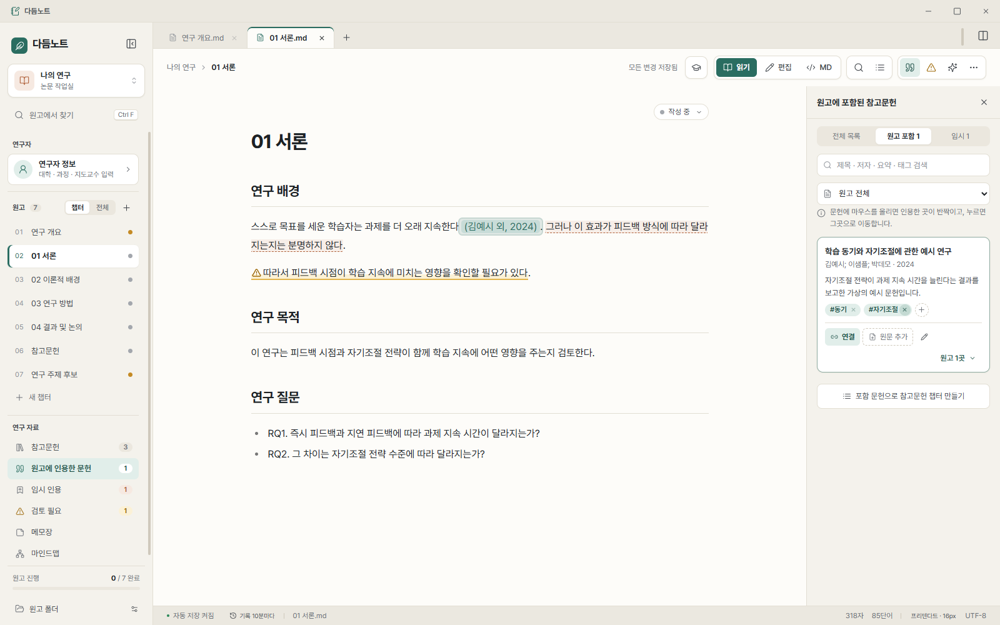
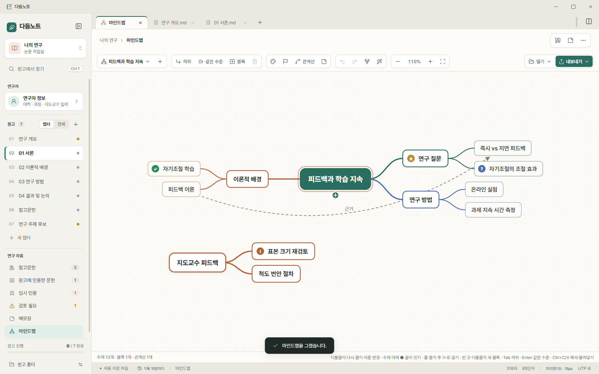

다듬노트
논문을 챕터별로 쓰고, 참고문헌·인용·마인드맵·연구 메모를 한곳에서 다듬는 Windows 연구 노트입니다. 모든 내용은 내가 고른 폴더에만 저장됩니다.
Microsoft Store 출시 준비 중
할 수 있는 일
- 챕터별 원고읽기·편집·Markdown 보기, 자동 저장
- 참고문헌과 인용PDF에서 서지 정보 인식, 문장을 드래그해 인용 연결
- 임시 인용 · 검토 필요 표시근거가 필요한 문장, 다시 볼 문장을 표시해 모아 보기
- 마인드맵독립 블록, 자유로운 연결, Mermaid·LLM 양식으로 열기·내보내기
- 연구자 탭나와 지도교수 정보를 AI 도구의 배경으로 활용
- 버전 기록과 내보내기비교·복원, Markdown·HTML·PDF
